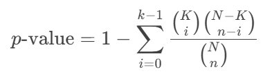

常见问题
Q1：测序常见结果中的Count、FPKM、TPM之间有何区别？如果使用FPKM值，究竟多大才能算表达量高？
- Count：原始测序得到的count数就是比对到某个基因i上的总数目。在测序分析过程中，首先是将测序得到的reads比对到参考基因组上，然后通过软件来计算该片段上比对到reads的数量就叫count，所以一般情况下count是一个整数值。部分特殊情况count也可能携带小数点。
FPKM：我们把比对到的某个基因i的Fragment数目，除以基因的长度，其比值再除以所有基因的总长度。严格来讲这里的基因长度是指基因i外显子的总长度。换句话说，FPKM计算的是DNA片段(fragments)，也就是一对reads。
TPM：与FPKM不同的地方在于，其基因的比值是再除以（基因的总数目/基因的总长度）。因此，其得到的结果是一个相对的比值。
Count指的是最原始的测序reads数，是无法进行组间比较和基因定量的。需要对基因表达量进行归一化处理，包括FPKM以及TPM都是不同的归一化处理方法。FPKM和TPM各有优势，FPKM适用于同一个样本中基因A和基因B的相对表达量。TPM唯一不同的地方就是计算次序不一样。所以，当计算TPM的时候，先对基因长度进行归一化，其次是测序深度的归一化。
事实上基因表达定量方法不同彼此之间差异不会特别大，真正影响基因表达排在首位的仍然是实验方法和课题设计。FPKM值和物种、不同的发育生长时期都是有关系的，没有一个绝对和统一的标准。根据文献中的报道，一般认为0.5以下的受测序误差影响比较大，可以认为是没有表达，0.5-1属于低丰度表达基因，1-10属于中低丰度表达基因，10-50以上属于中高丰度表达基因，50以上属于高丰度表达基因，该标准仅供参考。
Q2：拿到转录组测序数据后，通用筛选思路有哪些？
- 转录组测序可以帮助研究者全局且快速地对某一生命过程中所有发生变化的基因进行筛查，然而只有从全局的基因变化分析到定位具体基因的讨论，研究者才能有的放矢地开展后续的基因表型验证和机制探索。基因功能富集分析是最常使用的分析方法之一，分析差异基因（或其他目标选基因集）可能涉及的功能。基于富集分析结果筛选研究方向或缩小候选分子范围是常用的数据挖掘思路。
Q3：差异表达分析结果不一致或假阳性率高？
- 不同工具（如DESeq2、edgeR）的统计模型和假设可能不同，多重检验校正（如Benjamini-Hochberg方法）可以减少假阳性。
Q4：差异基因的通路富集分析原理是？
- GO功能富集分析的方法是，将全部基因作为背景列表，差异基因作为从背景列表中筛选出来的候选列表，利用超几何分布检验计算代表GO功能集在差异基因中是否显著富集，进而得到P值，再对P值进行Benjamini & Hochberg多重检验纠正后得到FDR。其中超几何分布检验计算P值的公式如下：

图1 超几何分布检验计算P值的公式
其中，N代表全基因中具有GO注释的基因数目，K代表全基因中注释到某个GO类别的基因数目，k代表差异基因中注释到某个GO类别的基因数目。
同样地，类似上述GO富集分析的方法，KEGG显著性富集分析时以KEGG pathway为单位，应用超几何检验，找出与整个基因组背景相比，在差异表达基因中显著性富集的pathway。